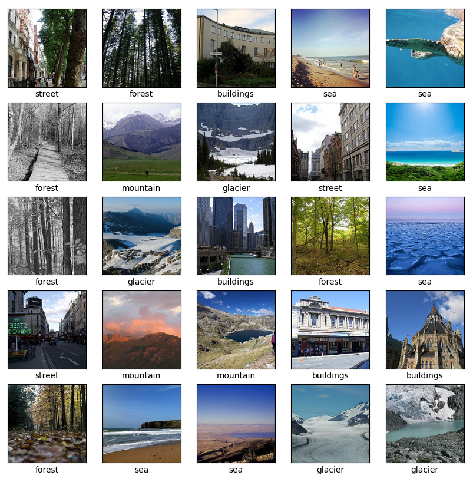

How well can a neural network tell the difference between streets and buildings?
Edited September 06 2023
I figured the next step I wanted to take after constructing a dense neural network that classified a vector of mono color values for the MNIST dataset (Bayesian Neural Network Project Page) is a 2-dimensional convolutional neural network. A convolutional neural network does not flatten the images to be some vector of normalized pixel values. The image itself is taken in and important features are captured. A convolutional neural network uses kernels that pass over the training images and highlight important distinguishing features between classes.
The kernel sliding over the image pixel by pixel is the 'convolution' that takes place in this type of neural network. I've linked a useful GIF (Figure 0.) that illustrates a 3x3 pixel kernel sliding over a 6x6 pixel image. After the convolution takes place, the resultant transformed image is now a 4x4 pixel image. The 4x4 pixel image is a composition of the important features within the kernel as it slid over the original image and converted them into single pixel values. Of course, this assumes the kernel parameters used correctly capture important image features. Larger resolution images require multiple layers, each with their own kernels, in order to capture all of the relevant features that distinguish each image class from one another.
Figure 0.
The dataset I used for this project is the Intel image classification datset, which I downloaded from Kaggle. The dataset consists of 14034 training images and 3000 test images spread across 6 classes: building, forest, glacier, mountain, sea, and street. The images are 150x150 pixels with RGB color channels so each image has a shape of 150x150x3. The image below (Figure 1.) is a 5x5 grid of 25 example images from the training set.

Figure 1.
I used the keras 'image_dataset_from_directory' utility function to act as a batch generator to the neural network. The generators free up memory by directly loading each new batch without needing to load the entire dataset into local memory. I ran this training on my personal desktop which is running a Ryzen 5600x processor, an RTX 3060 Ti GPU, and 32gb of 3200hz ram. I managed to get CUDA installed on windows to take full advantage of the GPU compute capabilities.
The Convolutional Neural Network
Convolutional neural network architectures can take on a very
wide assortment of designs. Researching into notable CNN architectures for an initial schematic I can use I came across names like 'AlexNet', 'LeNet', 'ResNet', and a lot of others. The architecture I decided to implement, at least in concept, is the VGGnet architecture.
'VGG' stands for 'Visual Geometry Group', and was developed and presented in the paper 'Very Deep Convolutional Networks for Large-Scale Image Recognition' in 2015. The architecture can be best summarized as stacked groups of convolutional layers with the same increasing number of filters per stack and a set of dense layers at the end, with max-pooling layers in between to reduce image size. So for the Intel images which are 150x150 pixels in size, the first stack could be 3 convolutional layers with 16 filters each, followed by a 2x2 max-pooling layer which halves the image size to 75x75 pixels. These resultant 75x75 pixel images are then fed into another stack of 3 convolutional layers with 32 filters each, and so on. Once sufficient convolutional stacks are created, the 2-dimensional data is flattened to a 1-dimensional vector that is fed to dense layers with some number of nodes in each, ending in a 6 node output layer that outputs the image classification prediction (or in the Bayesian case, 6 probabilities for each class, all summing to 1.0)
For the Intel images I layered 5 stacks of 3 convolutional layers, starting at 32 filters, increasing by a factor of 2 until the last stack has 512 filters. In between these stacks are max-pooling layers that decrease the dimensions of the images. The first max-pooling has a size 2x2 (or written as (2,2) ) , which halves the total pixel dimensions. The next max-pooling layers are (3,3), (2,2), (2,2). These bring the image side length from 150px to 75px to 25px to 12px down to 6px.
After the last convolutional layer stack is one more (3,3) max-pooling layer to bring the size down to 2px x 2px. I added this last max-pooling layer to help with memory usage, as otherwise the resultant output would be 6x6x512 sized. I flatten output, which had 512 filters, producing a 2x2x512 sized one-dimensional vector which I feed into two dense layers, with 1024 nodes and then 512 nodes. The output layer has 6 nodes as we have 6 classes of images.
The figure below is a general schematic for this CNN that I made in the AlexNet style using the website https://alexlenail.me/NN-SVG/AlexNet.html. I say general schematic because the dropout layers I added to both convolutional and dense layers are not visualized though I added text to demarcate where the dropout layers (blue) and the max-pool layers (orange) are in the model using arrows.
Figure 2.
I will note that this is the -Final- model architecture, and not initially designed with dropout, regularization or pre-processing layers. The first iteration was only the convolutional layers, max-pooling layers, and dense layers. Also unlike the dense Bayesian neural network to classify MNIST digit image vectors, there are non-Bayesian layers in this CNN. This was a decision based on saving memory so this model could run without crashing my Desktop's ram or exceeding the memory of my GPU, as Bayesian layers typically require 2x as many parameters, as we are not just fitting single value weights but 2 parameters per weight that describes that weight's mean and variance (if assuming Gaussian distributions). The first stack of 3 convolutional layers are Bayesian using the Tensorflow-Probability 'Convolutional2DReparameterization' layer, and the last three dense layers are Bayesian using the Tensorflow-Probability 'DenseReparameterization'.
I added scaling, and 'flip' layers to perform both image RGB scaling as well as data-augmentation within the model, such that later images that I want to test the model on will only have to be in the 150x150x3 format. Both of these layers are available within the Tensorflow Keras API and easy to add. The scaling layer ensures that the image RGB values are scaled from their original [0-255] pixel values to the more machine-friendly [0-1] float values. The flip layers has an argument for 'horizontal', 'vertical', and 'horizontal_and_vertical' flips to images before running through the trainable parts of the model, and produce a more robust model in the end.
I utilized the Adam optimizer as it offers the best default performance and only set the initial learning rate to 1e-4. I also implemented a callback called 'ReduceOnPlateau' that will reduce the learning rate by some factor after so many epochs without improvement in the metric of your choosing. I set it to decrease learning rate by a factor of 0.95 every 5 epochs that the validation accuracy did not increase. The CNN will be fit for 100 epochs with a batch size of 64 images per epoch step for both training and validation sets. I also added 'EarlyStopping' to stop the model fit after 10 epochs of no improvement in the validation accuracy after the 25th epoch in order to prevent the model from over fitting if left to run for all 100 epochs.
The dropout rates, as well as the regularization values were found by starting with really low values and adjusting them one at a time while observing model validation accuracy. I didn't implement a grid search or a random search to tune these parameters even though it is possible with the keras_tuner module. I might try to find best parameters later on another Bayesian CNN using smaller image sets such as the CIFAR-10 dataset. Eventually I found that having spatial dropouts of 20% after each stack of convolutional layers and 50% dropout after the first 2 dense layers provided the best results in training, and validation accuracy. The L1 and L2 regularizations were applied to the first two dense layers only and both had values of 5e-4. Figure 3 is a plot of the model accuracy (train and validation) as well as model loss (train and validation) as a function of epochs. There were 87 training epochs before the EarlyStopping callback stopped training from proceeding. Overall the model looks well behaved, showing a consistent similarity between the training and test performance in the accuracy and loss histories during training.
Figure 3.
I evaluate the model with the test set of about 3000 images and find the model to have an accuracy of about 84.9%, so not great but not terrible also. This accuracy might be raised with more stacked convolutional layers, but I decided against this as this model was already pushing ~80MB of parameters. With the test set I also generate predictions of these images, running 200 draws from the model, each producing some probability on a particular image being a particular class (Building, Sea, Glacier, etc...). The median of these probability distributions for each image are selected as the 'Label' that we compare against the actual class labels, with which we can construct a 6 class confusion matrix, which I plot below in Figure 4. The resulting confusion matrix looks pretty good, given that the model has an 84.9% accuracy.
Figure 4.
Confusion matrix plots are fun to use because they can provide insight into how well (or not well) the model performs each type of classification. The 'Building' class of images seem to be the weakest classification performance of the model, with only 76% of images correctly classified. Sliding over from the top left most square to the top right most are the fractions of 'Building' images that were incorrectly classified as another type of image. There are 16% of these incorrect predictions labeled with the 'street' label. Note however that the model doesn't have a similar type of issue correctly labeling streets. There are 91% of 'street' images correctly classified, with only 5% being labeled 'building'. The top performance classification, with 96% correctly labeled images, are with the 'forest' images.
There are other weakpoints in my model when it comes to classifying these images. There are 11% 'mountain' images that are erroneously classified as 'glaciers' -and- 11% of 'glacier' images are mis-classified as 'mountains'. This may indicate some issue that the model has with discerning these types of images, possibly because glaciers are often found in mountains. Similarly 7% of 'glacier' images are mistakenly labeled as 'sea' images and vice-versa. This might arise due to the similarity of these types of images as both can exhibit a smooth, flat appearance, which might necessitate a deeper model to properly separate. These comparisons between predicted and actual labels are useful to assess the performance of your model, but confusion matrices can be made with non-Bayesian classifiers. What can we infer from the probability distributions our model can generate?
Figure 5.
I plotted the entropy distributions for the correctly and incorectly classified images in Figure 5 above. The entropy can be considered as the amount of information you have about what kind of image the model is processing. The more information, the lower the probability, the higher the possibility of this image being any other class. This relation also works in reverse, with a higher probability indicating that there are not many other possibilities for the image label. A 1.0 probability on a correct prediction of a 'mountain' image means there is no probability for any other class. The image is certainly that of a mountain. The correctly classified images have a skewed distribution, toward the lower entropy, higher probability end, with a rightward tail towards higher entropy. The incorrectly classified images have a more uniform distribution, indicating the model is unsure about what these images are, and reflects that by outputting broader probability distributions in its predictions. The entropy distributions can also be separated by class; the per class entropy distributions for the correctly and incorrectly classified images are plotted in the box-whisker plot in Figure 6.
Figure 6.
The gold line in each box whisker indicates the median of the individual class entropy distributions. The top and bottom edges of the boxes indicates the 84th and 16th percentiles of the distributions, respectively. The top and bottom whiskers on each box indicate the range of the entropy distribution. The correctly labeled forest images have the smallest plotted box-whisker, which agrees with the forest class images having the highest accuracy in the model. The 'glacier', 'mountain', and 'sea', images have some of the broadest entropy distributions in the correctly classified set. The correctly classified 'street' images have the second smallest entropy distribution. The entropy distributions of the incorrectly classified images also have information on the model's behavior. The broadness of the entropy distributions of the incorrectly classified images is indicative of the model's uncertainty in the classifications. All six of the classes of incorrectly classified images have very broad distribtuions, with their whiskers nearly covering the entire entropy plot range. The 'building' images have the broadest box, which coincides with that class having the lowest accuracy in the test set. This is one of the benefits of a Bayesian network, as the entropy distributions of wrongly classified images also have information on the model's performance. It would be alarming to find an image class that has a very skewed, lower entropy distribution, which could indicate something wrong in the model architecture.